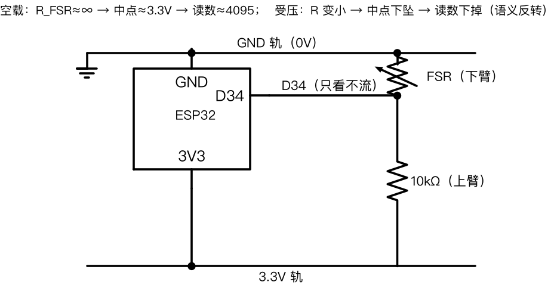

V2 预演版 · 上下换位（10k 上臂 / FSR 下臂）

三查（换位版）
① 18 列三件套：FSR 脚 + 10k 脚 + 黄线 同一列，插实；
② FSR 上端 →
顶轨里行（GND）
；10k 下端 →
顶轨外行（3.3V）
；别插到底部空轨；
③ 长轨中间有断点：插孔必须与黑线/红线在同一段（左右半边）。
正常表现
：空载稳定 ≈4095 → 指压圆片读数往下掉（语义反转）。
若 0–4095 乱跳 = 中点悬空，优先重插黄线。